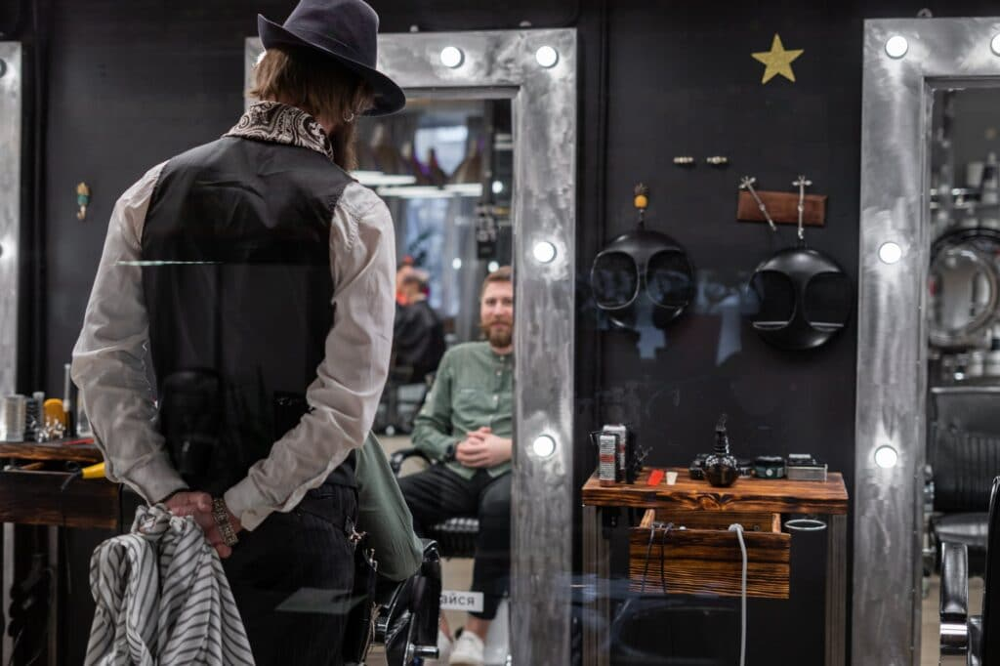

Fashion & Beauty
Category:Fashion & Beauty
Digital Nomad Fashion – New Outfit Rules

Although a home-based job or somewhere else on earth has its advantages, like rolling out your bed and carrying it out in your pajamas. The simple truth is there are particular costume rules that you ought to know about. Digital nomad fashion is really on the increase nowadays, so stick around if you need to know about doing it. Simply have a look at our hints and revel in!
Fashion & Beauty
Why Should Men Visit Hair Salon Regularly?

Men are not as conscious with the medium they look as women are. Just like women, many men are aware of the significance of being well-maintained all the time. Beautiful hair is taken considered as the most crowning glory of a woman’s overall mesmerizing.
Fashion & Beauty
10 Women’s Day Gift Ideas For Your Sister

Sisters are like second mothers. It’s like when God wants you to be well cared for, He sends you a sister. You may have uncountable fights and arguments with her. But you also have a lot of fun and laughter with her. There are days when she gets on your nerves but at the end of the day, she’s your support system. The person you look up to the most and the person you depend upon for the greatest advice. As Women’s Day is coming up, here are 10 ideas for a women’s day gift for a sister.
Fashion & Beauty
6 Tips To Buying Vintage Clothing For Men
Most people spend a period trying to copy the wardrobe of their favorite celebrities. But keep in mind shopping for vintage clothing is a challenging task because you need a deep search for these products. So, if you love clothing particularly vintage, you need some expert tips to buy vintage clothing for men.
Fashion & Beauty
Complete Your Office Look With Stylish Accessories
The word accessory came from the Latin word ‘accedere’ that means ‘to add.’ But here, a well-chosen stylish accessories is far more than an add-on to your costume. Often, going to work, everybody needs a professional outfit and accessories that go with it. Your accessories tell your story, finish the look, and spotlight you as well. It will be easiest to know what laptop bag for women to choose with your attire in the morning. At this place, we want to help you in your accessory selection and what you should avoid making your morning routine facile.
Fashion & Beauty
How To Dress Sharp As a Guy
The fashion in which you dress has a significant effect on your life. It can affect how people view you, including your friends, families, community members, and, of course, love interests. The clothing that you wear will also influence your emotions and feelings.